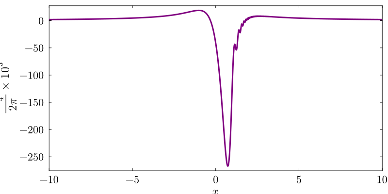
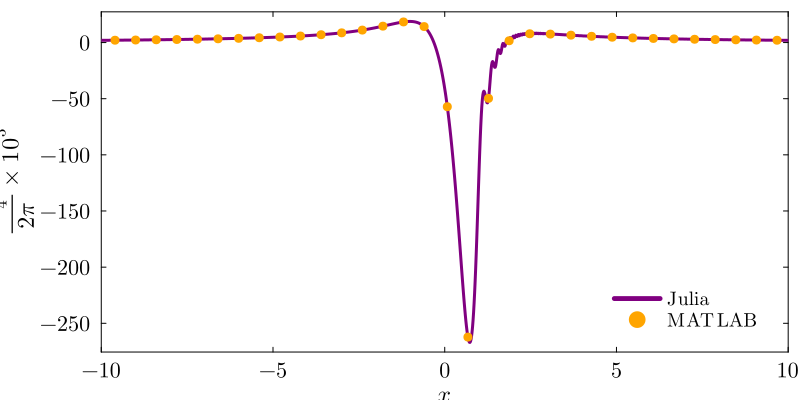
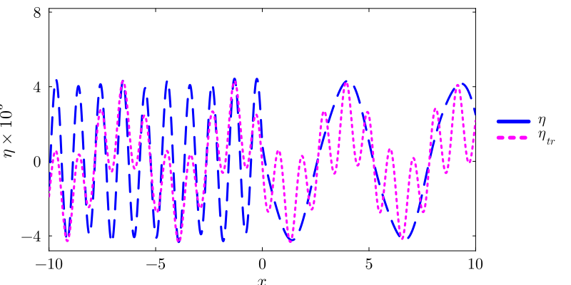
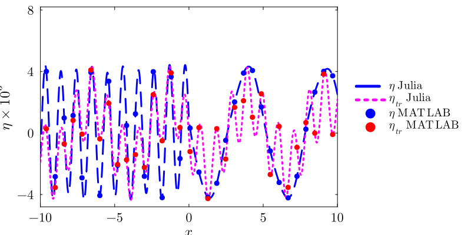
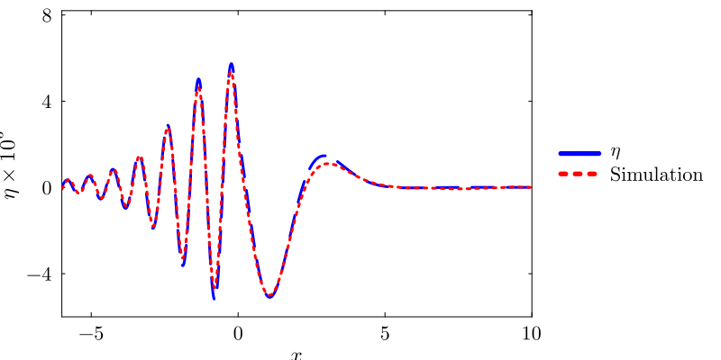
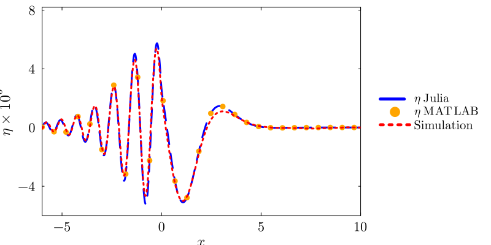

Capillary–Gravity (Manuscript §4.2)
With surface tension present ($\alpha > 0$), both gravity and capillary restoring forces act on the interface. The dispersion relation gains a cubic term, producing two distinct real poles $k_s$ (gravity root) and $k_l$ (capillary root). The key numerical technique is combining all integrand contributions so that the singularities cancel before quadrature.
Formulation
We now turn to the case of $\alpha>0$. As $\rho_r<1$, we have both capillary and gravitational forces. For this case, eqn. (3.8) of the manuscript can be rewritten as (Note that the integrals in eqn.(3.8) are folded onto the positive k-axis to get rid of the $|k|$ terms),
\[\eta(x,t) = \eta_s(x)+\eta_{\mathrm{tr}}(x,t) \tag{4.5a}\]
where,
\[\frac{\eta_s(x)}{F_0} \equiv -\frac{1}{\pi}\int_0^\infty dk\;\frac{\cos(kx)}{\alpha (k-k_l)(k-k_s)} \tag{4.5b}\]
\[\frac{\eta_{\mathrm{tr}}(x,t)}{F_0} \equiv -\frac{1}{2\pi}\left[\mathbb{I}_3(x,t)+\mathbb{I}_4(x,t)\right] \tag{4.5c}\]
\[\mathbb{I}_{3,4}(x,t) \equiv -\frac{1+\rho_r}{\alpha}\int_0^\infty dk\,\frac{\left(k\pm\chi(k)\right)\cos\left[t\left(k\mp\chi(k)\right)-kx\right]}{\left(1+\alpha k^2-\rho_r\right)\left(k-k_l\right)\left(k-k_s\right)} \tag{4.5d}\]
Summing the steady term (4.5b) and both transient terms (4.5d) into a single combined integrand before quadrature cancels the poles at $k_s,k_l$ analytically, leaving a smooth function to integrate numerically. The combined integrand is then split into three pieces around the (now removable) singularities at $k_s$ and $k_l$ and integrated separately. The CG IVP WaveSolution uses this symmetric $\eta_s$ from (4.5b) as sol.η_steady; its sol.η_transient is the remainder $\eta-\eta_s$.
The asymmetric classical radiation solution is a separate steady reference, obtained with either IVP(asym_cancel=true) for the full time-dependent decomposition or steady(rayleigh_dissipation=true) for the time-independent profile. It is the long-time result after the transient contribution supplies the asymmetric cancellation described below.
\[\chi(k) \equiv \sqrt{\beta k+\frac{\alpha}{1+\rho_r}k^3},\]
\[k_{l,s} = \frac{1+\rho_r}{2\alpha}\left[1\pm\sqrt{1-\frac{4\alpha\beta}{1+\rho_r}}\right].\]
Similar to the previous section ($\alpha=0$ case), the interface shape due to the time-independent response $\eta_s(x)$, given by eqn. (4.5b), is also symmetric about $x=0$, (see the Steady-state proof). Note that eqn. (4.5b) is identical to eqn. (3.9) of the manuscript after excluding all terms arising from the Dirac delta function. This symmetric response is shown by the black solid curve in panel (a) of Figure 8 of the manuscript.
We now turn to a formal demonstration of the asymmetric cancellations about $x=0$ as $t\rightarrow\infty$. The expression for $\eta_s(x)$ in eqn. (4.5b), after application of principal-value techniques, may be written as (see the Steady-state proof):
\[\frac{\eta_s(x)}{F_0} = \frac{1}{\alpha(k_l-k_s)}\left[-\sin(k_s|x|)+\sin(k_l|x|)\right] + \frac{k_l+k_s}{\alpha\pi}\int_0^\infty dy\,\frac{y\exp\left(-|x|y\right)}{\left(y^2+k_l^2\right)\left(y^2+k_s^2\right)} \tag{4.7}\]
The second, integral term above is Lamb's $G(x)$ function (up to the prefactor); it is evaluated numerically in the code section below via cg_Gx_integral.
After lengthy calculations involving contour integration and stationary-phase approximation (see the Capillary-gravity asymmetric cancellation proof), we may show that
\[\frac{\eta_{\mathrm{tr}}(x,t\rightarrow\infty)}{F_0} = \frac{1}{\alpha(k_l-k_s)}\left[-\sin(k_sx)-\sin(k_lx)\right], \quad x\in(-\infty,\infty). \tag{4.8}\]
This contribution to the steady state essentially stems from the term $\mathbb{I}_3(x,t)$ in eqn. (4.5d), whereas the term $\mathbb{I}_4(x,t)$ in the same equation tends to zero as $t\rightarrow\infty$. Figure 7 of the manuscript confirms this decay for large time, $t\gg1$.
The sum of eqns. (4.7) and (4.8) yields the final form of the steady-state interface at all $x$. The asymmetric cancellation in $\eta(x,t\rightarrow\infty)=\eta_s(x)+\eta_{\mathrm{tr}}(x,t\rightarrow\infty)$, upstream ($x<0$) and downstream ($x>0$) of the forcing, may readily be observed by comparing these expressions. We reiterate that the short waves for $x<0$ and the long waves for $x>0$ seen at steady state result from this cancellation.
Unlike the $\alpha=0$ case, it was not possible to obtain closed-form expressions in terms of real integrals for the $\eta_{\mathrm{tr}}(x,t)$ terms in eqn. (4.5d). Hence, we have evaluated these integrals directly numerically in the principal-value sense around the pole(s).
Numerical evaluation
The integral expressions for $\eta(x,t)$ [eqn. (4.5a) of the manuscript], $\eta_s(x)$ [eqn. (4.5b)], and $\eta_{\mathrm{tr}}(x,t)$ [eqn. (4.5c)] are evaluated numerically using both Julia and MATLAB with the codes provided below, at $x=3$ and $t=110$. The integrals are computed using a numerical Cauchy principal value (CPV) procedure, in which a small neighborhood of width $\epsilon=10^{-6}$ around each pole, $k=k_s$ and $k=k_l$, is excluded from the numerical integration to avoid direct evaluation at the singularities.
using ForcedInterfacialWaves
p = compute_cg_parameters()
# Combined integrand at a single point
println("I(k=2; x=3, t=110) = ", cg_combined_integrand(2.0, 3.0, 110.0, p))
# Partial integrals
I₁, I₂, I₃ = cg_partial_integrals(3.0, 110.0, p)
println("I₁ = ", I₁)
println("I₂ = ", I₂)
println("I₃ = ", I₃)
# Full IVP and the documented (symmetric) decomposition
sol = solve(ForcedGCProblem(p, 3.0, 110.0))
println("η_ivp = ", sol.η)
println("η_s (4.5b) = ", sol.η_steady)
println("η_transient = ", sol.η_transient)
# Separate asymmetric classical steady comparison
classical = solve(ForcedGCProblem(p, 3.0);
method=steady(rayleigh_dissipation=true))
println("η_classical = ", classical.η)
# Steady G(x) integral
println("G(3) = ", cg_Gx_integral(3.0, p))I(k=2; x=3, t=110) = -2.492590111020123
I₁ = -10.469830630677311
I₂ = -3.3709095739316925
I₃ = 5.152909149338241
η_ivp = 0.001920386718354885
η_s (4.5b) = -0.0005772670229863901
η_transient = 0.002497653741341275
η_classical = 0.0018388025677065953
G(3) = 0.011715104659267%% Two-fluid capillary-gravity IVP via CPV integration
U = 26.7046; % Base flow speed [cm/s]
g = 981.0; % Gravitational acceleration [cm/s^2]
T = 72.0; % Surface tension [dyn/cm]
rho_l = 1.0; % Lower-fluid density [g/cm^3]
rho_u = 0.001; % Upper-fluid density [g/cm^3]
% Characteristic scales and nondimensional parameters
l_c = U^2 / g;
alpha = T / (rho_l * U^2 * l_c);
rho_r = rho_u / rho_l;
beta = (1.0 - rho_r) / (1.0 + rho_r);
gamma_rho = 1.0 / (1.0 + rho_r);
% Gravity and capillary wave roots
discriminant = (1.0 + rho_r)^2 - 4.0 * alpha * (1.0 - rho_r);
k_l = ((1.0 + rho_r) + sqrt(discriminant)) / (2.0 * alpha);
k_s = ((1.0 + rho_r) - sqrt(discriminant)) / (2.0 * alpha);
F0 = 0.01 * T / (rho_l * U^2 * l_c);
% Quadrature parameters
epsilon_pv = 1.0e-6;
AbsTol = 1.0e-10;
RelTol = 1.0e-8;
k_max = Inf;
% Evaluation point and time
x = 3.0;
t = 110.0;
% Two-fluid dispersion function
chi = @(k) sqrt(beta * k + gamma_rho * alpha * k.^3);
% Combined integrand: steady term + two transient terms.
% Summing before integration cancels the poles at k_s, k_l.
total_integrand = @(k) ...
2.0 * cos(k * x) ./ (alpha * (k - k_l) .* (k - k_s)) ...
- (1.0 + rho_r) * (k + chi(k)) ./ (1.0 - rho_r + alpha * k.^2) .* ...
cos(k * (t - x) - t * chi(k)) ./ (alpha * (k - k_l) .* (k - k_s)) ...
- (1.0 + rho_r) * (k - chi(k)) ./ (1.0 - rho_r + alpha * k.^2) .* ...
cos(k * (t - x) + t * chi(k)) ./ (alpha * (k - k_l) .* (k - k_s));
fprintf('I(k=2; x=3, t=110) = %.12e\n', total_integrand(2));
% Split the CPV integral around the two removable poles
I1 = integral(total_integrand, 0, k_s - epsilon_pv, ...
'AbsTol', AbsTol, 'RelTol', RelTol);
I2 = integral(total_integrand, k_s + epsilon_pv, k_l - epsilon_pv, ...
'AbsTol', AbsTol, 'RelTol', RelTol);
I3 = integral(total_integrand, k_l + epsilon_pv, k_max, ...
'AbsTol', AbsTol, 'RelTol', RelTol);
eta_ivp = -F0 / (2.0 * pi) * (I1 + I2 + I3);
fprintf('I1 = %.12e\n', I1);
fprintf('I2 = %.12e\n', I2);
fprintf('I3 = %.12e\n', I3);
fprintf('eta_ivp = %.12e\n', eta_ivp);
% Steady solution via Lamb's G(x)
G_integrand = @(k) cos(k * x) ./ (k + k_s) - cos(k * x) ./ (k + k_l);
G_x = integral(G_integrand, 0, Inf, 'AbsTol', AbsTol, 'RelTol', RelTol) / ...
(k_l - k_s);
eta_s = F0 / (alpha * (k_l - k_s)) * ...
(-sin(k_s * abs(x)) + sin(k_l * abs(x))) + ...
F0 * G_x / (pi * alpha);
% Asymmetric classical radiation solution for long-time comparison
eta_classical = F0 * (-2.0 / (alpha * (k_l - k_s)) * sin(k_s * x) + ...
G_x / (pi * alpha));
fprintf('G(x) = %.12e\n', G_x);
fprintf('eta_s (4.5b) = %.12e\n', eta_s);
fprintf('eta_classical = %.12e\n', eta_classical);MATLAB output
I(k=2; x=3, t=110) = -2.492590111020124e+00
I1 = -1.046983063067731e+01
I2 = -3.370910573931693e+00
I3 = 5.152900000000000e+00
eta_ivp = 1.920390000000000e-03
G(x) = 1.171509902934500e-02
eta_s (4.5b) = -5.772670229863901e-04
eta_classical = 1.838802567706595e-03Partial integrals ($x=3$, $t=110$)
| Integral | Julia | MATLAB | Agreement |
|---|---|---|---|
| $I_1$ | -1.04698e+01 | -1.04698e+01 | 12+ digits |
| $I_2$ | -3.37091e+00 | -3.37091e+00 | 12 digits |
| $I_3$ | 5.15291e+00 | 5.15290e+00 | ~5 digits ⚠️ |
| $\eta_{\mathrm{IVP}}$ | 1.92039e-03 | 1.92039e-03 | 5 digits |
MATLAB's integral emits a warning on the $[k_l+\varepsilon,\infty)$ interval, reaching its maximum subdivision limit. Julia's QuadGK (order=15) resolves the oscillatory tail more completely. The finite-domain integrals $I_1$, $I_2$ agree to machine precision.
$G(x)$ and steady solution ($x=3$)
| Quantity | Julia | MATLAB | Agreement |
|---|---|---|---|
| $G(3)$ | 1.171510e-02 | 1.171510e-02 | 5 digits (MATLAB hits interval limit on $[0,\infty)$) |
| $\eta_s$ from (4.5b) | -5.772670e-04 | -5.772670e-04 | 6 digits |
| $\eta_{\mathrm{classical}}$ | 1.838803e-03 | 1.838803e-03 | 6 digits |
The full spatial profile — IVP solution, its steady part, and the transient remainder — reproduces Figure 10 of the manuscript:
 Fig. 10: Julia and MATLAB overlay.
Fig. 10: Julia and MATLAB overlay.
$\mathbb{I}_4$ transient decay (Fig. 7)
Figure 7 of the manuscript shows the transient component $-\mathbb{I}_4(x,t)/(2\pi)$ at an early time $t = 0.34$, confirming the decay of $\mathbb{I}_4$ as $t\to\infty$.
using Plots, LaTeXStrings
x_grid = make_cg_xgrid(p; Nx=2001, xlim=(-15.0, 15.0))
t_I4 = 0.34
I4 = compute_cg_I4_profile(x_grid, t_I4, p; method=:threaded_vector)
plot(x_grid, -(1/(2π)) .* I4 .* 1e3; color="purple",
guidefontsize=16, tickfontsize=14,
xlabel=L"x", ylabel=L"\frac{-\mathbb{I}_{4}}{2\pi} \times 10^{3}",
xlims=(-10,10), size=(800,400))
Fig. 7: $-\mathbb{I}_4/(2\pi)$ at $t = 0.34$.

%% I4 component at t = 0.34 (Fig 7)
t = 0.34;
x_grid = linspace(-15, 15, 2001);
x_grid(abs(x_grid) < 1e-12) = [];
I4 = zeros(size(x_grid));
for i = 1:length(x_grid)
xi = x_grid(i);
integrand_I4 = @(k) -(1+rho_r)/alpha * ...
(k - chi(k)) .* cos(t*(k + chi(k)) - k*xi) ./ ...
((1 + alpha*k.^2 - rho_r) .* (k - k_l) .* (k - k_s));
I4(i) = integral(integrand_I4, 0, k_s - epsilon_pv, ...
'AbsTol', AbsTol, 'RelTol', RelTol) + ...
integral(integrand_I4, k_s + epsilon_pv, k_l - epsilon_pv, ...
'AbsTol', AbsTol, 'RelTol', RelTol) + ...
integral(integrand_I4, k_l + epsilon_pv, Inf, ...
'AbsTol', AbsTol, 'RelTol', RelTol);
end
figure;
plot(x_grid, -(1/(2*pi))*I4, 'Color', [0.5 0 0.5], 'LineWidth', 3);
xlabel('x'); ylabel('-I_4/(2\pi)');
xlim([-10 10]); ylim([-10 14]);Full IVP profile (Fig. 8)
The capillary–gravity IVP at $t = 367.35$ shows the transient contribution $\eta_{\mathrm{tr}}$ approaching its long-time limit.
t_fig8 = 367.35
sol_8 = solve(ForcedGCProblem(p, x_grid, t_fig8); method=IVP())
plot(x_grid, sol_8.η .* 1e3; label=L"\eta", color="blue", ls=:dash,
guidefontsize=16, tickfontsize=14, legendfontsize=14,
xlabel=L"x", ylabel=L"\eta \times 10^{3}",
xlims=(-10,10), ylims=(-4.8, 8.2), yticks=[-4, 0, 4, 8],
legend=:outerright, size=(800,400))
plot!(x_grid, sol_8.η_transient .* 1e3; label=L"\eta_{tr}", color="magenta", ls=:dot)
Fig. 8: Capillary–gravity IVP at $t = 367.35$.

%% Full CG IVP profile at t = 367.35 (Fig 8)
t = 367.35;
eta_8 = zeros(size(x_grid));
eta_s_8 = zeros(size(x_grid));
for i = 1:length(x_grid)
xi = x_grid(i);
combined = @(k) ...
2*cos(k*xi)./(alpha*(k - k_l).*(k - k_s)) ...
- (1+rho_r)*(k + chi(k)).*cos(k*(t-xi) - t*chi(k)) ./ ...
((1-rho_r+alpha*k.^2).*alpha.*(k-k_l).*(k-k_s)) ...
- (1+rho_r)*(k - chi(k)).*cos(k*(t-xi) + t*chi(k)) ./ ...
((1-rho_r+alpha*k.^2).*alpha.*(k-k_l).*(k-k_s));
I_total = integral(combined, 0, k_s-epsilon_pv, ...
'AbsTol', AbsTol, 'RelTol', RelTol) + ...
integral(combined, k_s+epsilon_pv, k_l-epsilon_pv, ...
'AbsTol', AbsTol, 'RelTol', RelTol) + ...
integral(combined, k_l+epsilon_pv, Inf, ...
'AbsTol', AbsTol, 'RelTol', RelTol);
eta_8(i) = -F0/(2*pi) * I_total;
steady_int = @(k) cos(k*xi)./(alpha*(k-k_l).*(k-k_s));
eta_s_8(i) = -F0/pi * ( ...
integral(steady_int, 0, k_s-epsilon_pv, 'AbsTol', AbsTol, 'RelTol', RelTol) + ...
integral(steady_int, k_s+epsilon_pv, k_l-epsilon_pv, 'AbsTol', AbsTol, 'RelTol', RelTol) + ...
integral(steady_int, k_l+epsilon_pv, Inf, 'AbsTol', AbsTol, 'RelTol', RelTol));
end
eta_tr_8 = eta_8 - eta_s_8;
figure; hold on;
plot(x_grid, eta_8*1e3, 'b--', 'LineWidth', 3);
plot(x_grid, eta_tr_8*1e3, 'm:', 'LineWidth', 3);
xlabel('x'); ylabel('\eta \times 10^3');
legend('\eta','\eta_{tr}'); xlim([-10 10]);Comparison with nonlinear simulations (Fig. 10)
The IVP solution is compared against a nonlinear simulation (Basilisk, Navier–Stokes/VOF) at $t_{\dim} = 25$ s. Simulation data are stored in notebooks/if_25.csv; valid time indices are $t_{\dim} \in \{1, 3, 7, 15, 25, 60, 145, 300\}$ s.
using DelimitedFiles
t_dim = 25
t_sim = t_dim / (100 * p.t_c)
sol_sim = solve(ForcedGCProblem(p, x_grid, t_sim); method=IVP())
data = sortslices(
readdlm(joinpath(pkgdir(ForcedInterfacialWaves), "notebooks", "if_$(t_dim).csv"), ',', Float64; skipstart=1),
dims=1, by=r -> r[6])
x_bsk = data[:, 6] ./ p.l_c
y_bsk = data[:, 7] ./ p.l_c
plot(x_grid, sol_sim.η .* 1e3; label=L"\eta", color="blue", ls=:dash,
guidefontsize=16, tickfontsize=14, legendfontsize=14,
xlabel=L"x", ylabel=L"\eta \times 10^{3}",
xlims=(-6,10), ylims=(-6, 8.2), yticks=[-4, 0, 4, 8],
legend=:outerright, size=(800,400))
plot!(x_bsk, y_bsk .* 1e3; label="Simulation", color="red", ls=:dot)
Fig. 10: IVP vs nonlinear simulation at $t_{\dim} = 25$ s.

%% IVP vs nonlinear simulation at t_dim = 25 s (Fig 10)
t_dim = 25;
t = t_dim / (100 * t_c);
% Compute IVP profile (same combined-integrand approach as above)
eta_sim = zeros(size(x_grid));
for i = 1:length(x_grid)
xi = x_grid(i);
combined = @(k) ...
2*cos(k*xi)./(alpha*(k-k_l).*(k-k_s)) ...
- (1+rho_r)*(k+chi(k)).*cos(k*(t-xi)-t*chi(k)) ./ ...
((1-rho_r+alpha*k.^2).*alpha.*(k-k_l).*(k-k_s)) ...
- (1+rho_r)*(k-chi(k)).*cos(k*(t-xi)+t*chi(k)) ./ ...
((1-rho_r+alpha*k.^2).*alpha.*(k-k_l).*(k-k_s));
eta_sim(i) = -F0/(2*pi) * ( ...
integral(combined, 0, k_s-epsilon_pv, 'AbsTol', AbsTol, 'RelTol', RelTol) + ...
integral(combined, k_s+epsilon_pv, k_l-epsilon_pv, 'AbsTol', AbsTol, 'RelTol', RelTol) + ...
integral(combined, k_l+epsilon_pv, Inf, 'AbsTol', AbsTol, 'RelTol', RelTol));
end
% Load simulation data
data = readmatrix('notebooks/if_25.csv');
data = sortrows(data, 6);
x_bsk = data(:,6) / l_c;
y_bsk = data(:,7) / l_c;
figure; hold on;
plot(x_grid, eta_sim*1e3, 'b--', 'LineWidth', 3);
plot(x_bsk, y_bsk*1e3, 'r:', 'LineWidth', 3);
xlabel('x'); ylabel('\eta \times 10^3');
legend('\eta (IVP)', 'Simulation'); xlim([-6 10]);